CODING AGENTS AS PIXEL WORLD MODELS
traex/DeepSeek-V4.1-Flash · 0181
点击播放 · 原生 RGB 像素
逐轮保存的候选
回放视频、检查图与代码变化。
每份候选均可单独播放。实际图片检查记录在下方工具轨迹中。
候选 01播放与检查图
点击播放 · 原生 RGB 像素

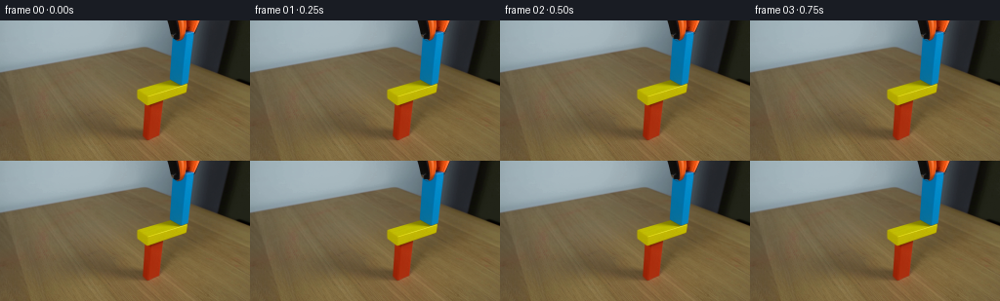
展开代码变化
--- 上一保存版本
+++ 本次保存版本
@@ -0,0 +1,166 @@
+from pathlib import Path
+
+import cv2
+import numpy as np
+from PIL import Image
+
+import artifact_io
+
+
+CASE_DIR = Path(__file__).resolve().parent
+FRAME_COUNT = 20
+
+
+def build_gripper_mask(image):
+ """Return a tight mask for the orange and black tool above the block."""
+ rgb = image.astype(np.float32)
+ r, g, b = rgb[:, :, 0], rgb[:, :, 1], rgb[:, :, 2]
+ value = rgb.max(axis=2)
+
+ orange = (r > 65) & (g > 22) & (b < 85) & (r > g * 1.35)
+ black = value < 88
+ colored = orange | black
+
+ polygon = np.array(
+ [
+ [171, 0],
+ [204, 0],
+ [203, 9],
+ [195, 12],
+ [192, 12],
+ [192, 21],
+ [184, 22],
+ [182, 18],
+ [172, 17],
+ ],
+ dtype=np.int32,
+ )
+ region = np.zeros(image.shape[:2], dtype=np.uint8)
+ cv2.fillPoly(region, [polygon], 1)
+ mask = region.astype(bool) & colored
+
+ # A one-pixel fringe removes the old anti-aliased silhouette.
+ mask = cv2.dilate(mask.astype(np.uint8), np.ones((3, 3), np.uint8), iterations=1)
+
+ # Keep the blue wooden block untouched.
+ blue = (
+ (b > 82)
+ & (b > r * 1.40)
+ & (b > g * 1.04)
+ & (r < 95)
+ )
+ mask[blue] = 0
+ return mask.astype(bool)
+
+
+def reconstruct_clean_plate(image, mask):
+ """Fill the removed tool with row-wise colors from its two sides."""
+ plate = image.copy()
+ height, width = mask.shape
+ for y in range(height):
+ xs = np.flatnonzero(mask[y])
+ if not len(xs):
+ continue
+
+ left = xs.min()
+ right = xs.max()
+ valid_left = np.flatnonzero(~mask[y, :left])
+ valid_right = np.flatnonzero(~mask[y, right + 1 :]) + right + 1
+ if len(valid_left) and len(valid_right):
+ x0 = int(valid_left[-1])
+ x1 = int(valid_right[0])
+ c0 = image[y, max(0, x0 - 2) : x0 + 1].mean(axis=0)
+ c1 = image[y, x1 : min(width, x1 + 3)].mean(axis=0)
+ for x in xs:
+ t = (x - x0) / max(1, x1 - x0)
+ plate[y, x] = np.rint(c0 * (1.0 - t) + c1 * t).astype(np.uint8)
+
+ # A tiny blur makes the interpolated wall join visually neutral.
+ soft = cv2.GaussianBlur(plate, (3, 3), 0.65)
+ blend = cv2.GaussianBlur(mask.astype(np.float32), (3, 3), 0.55)[:, :, None]
+ return np.clip(
+ plate.astype(np.float32) * (1.0 - blend) + soft.astype(np.float32) * blend,
+ 0,
+ 255,
+ ).astype(np.uint8)
+
+
+def make_jaw_sprites(image, gripper_mask):
+ left_shape = np.array(
+ [[171, 0], [192, 0], [192, 12], [190, 12], [190, 21], [184, 22],
+ [182, 18], [172, 17]],
+ dtype=np.int32,
+ )
+ right_shape = np.array(
+ [[192, 0], [205, 0], [203, 10], [195, 12], [192, 10]],
+ dtype=np.int32,
+ )
+
+ sprites = []
+ for polygon in (left_shape, right_shape):
+ region = np.zeros(image.shape[:2], dtype=np.uint8)
+ cv2.fillPoly(region, [polygon], 1)
+ alpha = (region.astype(bool) & gripper_mask).astype(np.uint8) * 255
+ alpha = cv2.GaussianBlur(alpha, (3, 3), 0.45)
+ sprites.append((image.copy(), alpha))
+ return sprites
+
+
+def composite_sprite(canvas, sprite, alpha, dx, dy):
+ source, alpha_map = sprite, alpha.astype(np.float32) / 255.0
+ sh, sw = alpha_map.shape
+
+ sx0, sy0 = max(0, -dx), max(0, -dy)
+ dx0, dy0 = max(0, dx), max(0, dy)
+ sx1, sy1 = min(sw, canvas.shape[1] - dx), min(sh, canvas.shape[0] - dy)
+ if sx1 <= sx0 or sy1 <= sy0:
+ return
+
+ swidth, sheight = sx1 - sx0, sy1 - sy0
+ src = source[sy0 : sy0 + sheight, sx0 : sx0 + swidth].astype(np.float32)
+ a = alpha_map[sy0 : sy0 + sheight, sx0 : sx0 + swidth, None]
+ dst = canvas[dy0 : dy0 + sheight, dx0 : dx0 + swidth].astype(np.float32)
+ canvas[dy0 : dy0 + sheight, dx0 : dx0 + swidth] = np.clip(
+ src * a + dst * (1.0 - a), 0, 255
+ ).astype(np.uint8)
+
+
+def gripper_offsets(frame):
+ # Hold, open the fingers, then retract the whole assembly smoothly.
+ left = (0, 0)
+ right = (0, 0)
+ if frame == 4:
+ left, right = (-1, -1), (1, -1)
+ elif frame == 5:
+ left, right = (-2, -1), (2, -1)
+ elif frame >= 6:
+ left_x, right_x = -2, 2
+ lift = [
+ 0, 0, 0, 0, 0, 0,
+ -3, -7, -12, -18, -26, -35,
+ -45, -56, -68, -81, -95, -110, -126, -142,
+ ][frame]
+ left, right = (left_x, lift), (right_x, lift)
+ return left, right
+
+
+def generate():
+ first = np.array(Image.open(CASE_DIR / "first_frame.png").convert("RGB"))
+ gripper_mask = build_gripper_mask(first)
+ clean_plate = reconstruct_clean_plate(first, gripper_mask)
+ jaws = make_jaw_sprites(first, gripper_mask)
+
+ frames = np.empty((FRAME_COUNT, 144, 256, 3), dtype=np.uint8)
+ frames[0] = first
+ for frame in range(1, FRAME_COUNT):
+ canvas = clean_plate.copy()
+ left_offset, right_offset = gripper_offsets(frame)
+ composite_sprite(canvas, *jaws[0], *left_offset)
+ composite_sprite(canvas, *jaws[1], *right_offset)
+ frames[frame] = canvas
+
+ artifact_io.save(frames, CASE_DIR)
+
+
+if __name__ == "__main__":
+ generate()
候选 02播放与检查图
点击播放 · 原生 RGB 像素

展开代码变化
--- 上一保存版本
+++ 本次保存版本
@@ -49,7 +49,8 @@
& (b > g * 1.04)
& (r < 95)
)
- mask[blue] = 0
+ blue_fringe = cv2.dilate(blue.astype(np.uint8), np.ones((3, 3), np.uint8))
+ mask[blue_fringe.astype(bool)] = 0
return mask.astype(bool)

候选 04播放与检查图
点击播放 · 原生 RGB 像素
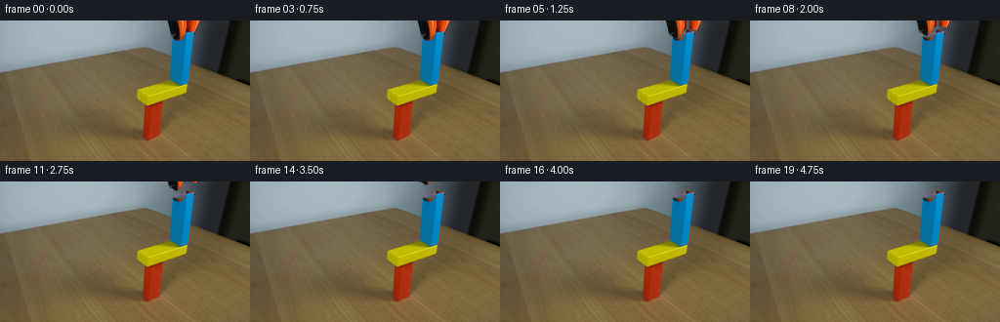
展开代码变化
--- 上一保存版本
+++ 本次保存版本
@@ -138,8 +138,8 @@
left_x, right_x = -2, 2
lift = [
0, 0, 0, 0, 0, 0,
- -3, -7, -12, -18, -26, -35,
- -45, -56, -68, -81, -95, -110, -126, -142,
+ -1, -2, -4, -6, -8, -10,
+ -12, -14, -16, -18, -20, -22, -24, -26,
][frame]
left, right = (left_x, lift), (right_x, lift)
return left, right
@@ -153,7 +153,10 @@
frames = np.empty((FRAME_COUNT, 144, 256, 3), dtype=np.uint8)
frames[0] = first
+ frames[1:4] = first
for frame in range(1, FRAME_COUNT):
+ if frame < 4:
+ continue
canvas = clean_plate.copy()
left_offset, right_offset = gripper_offsets(frame)
composite_sprite(canvas, *jaws[0], *left_offset)
可观测工具轨迹
实际执行的命令与返回图片。
命令 1exit 0
/bin/bash -c "sed -n '1,240p' prompt.txt"
命令 2exit 0
/bin/bash -c "sed -n '1,280p' GENERATION_RULES.md"
命令 3exit 0
/bin/bash -c "find . -maxdepth 2 -type f -printf '%p %s bytes\\n' | sort"
命令 4exit 0
/bin/bash -c "sed -n '1,260p' artifact_io.py"
命令 5exit 127
/bin/bash -c "file first_frame.png && python - <<'PY'
from PIL import Image
im=Image.open('first_frame.png')
print(im.size, im.mode)
PY"命令 6exit 0
/bin/bash -c "sed -n '1,220p' player_template.html"
命令 7exit 0
/bin/bash -c "python - <<'PY'
from PIL import Image
import numpy as np
im=np.array(Image.open('first_frame.png').convert('RGB'))
print(im.shape, im.dtype)
# list saturated high-color pixels bounds
mx=im.max(2); mn=im.min(2); sat=mx-mn
for name,cond in [('yellow',(im[:,:,0]>130)&(im[:,:,1]>110)&(im[:,:,2]<90)&(sat>80)),
('blue',(im[:,:,2]>100)&(im[:,:,1]>60)&(im[:,:,0]<90)),
('red',(im[:,:,0]>100)&(im[:,:,1]<90)&(im[:,:,2]<70)),
('orange',(im[:,:,0]>130)&(im[:,:,1]>30)&(im[:,:,1]<130)&(im[:,:,2]<60)),
('black',(im.max(2)<70))]:
ys,xs=np.where(cond)
print(name, 'n',len(xs),'bbox', (xs.min(),ys.min(),xs.max(),ys.max()) if len(xs) else None)
# sample grid y, runs of color classes
for y in [0,10,20,25,30,35,40,45,50,55,60,65,70,75,80,85,90,100,110,120,130]:
row=im[y]
# print transition points every 4 px? bbox color class runs where sat>80 and brightness
arr=[]
for x in range(0,256,4):
r,g,b=row[x]
if r>120 and g>100 and b<100: c='Y'
elif b>90 and g>50 and r<100: c='B'
elif r>100 and g<90 and b<70: c='R'
elif r>120 and 30<g<140 and b<70: c='O'
elif max(row[x])<70: c='K'
else:c='.'
arr.append(c)
print(f'{y:3d}', ''.join(arr))
PY"命令 8exit 0
/bin/bash -c "python - <<'PY'
from PIL import Image
im=Image.open('first_frame.png').convert('RGB')
im.crop((140,0,225,90)).resize((680,720),Image.Resampling.NEAREST).save('.tmp/crop_nearest.png')
im.crop((140,0,225,90)).resize((680,720),Image.Resampling.LANCZOS).save('.tmp/crop_smooth.png')
PY"命令 9exit 0
/bin/bash -c "python - <<'PY'
from PIL import Image
import numpy as np
im=np.array(Image.open('first_frame.png').convert('RGB'))
# Rows and runs for colors with tighter conditions
for y in range(0,90,2):
r,g,b=im[y,:,0],im[y,:,1],im[y,:,2]
masks={
'B':(b>90)&(g>45)&(b>r*1.5)&(b>g*1.05),
'Y':(r>100)&(g>80)&(b<80)&(r>g*.9),
'O':(r>110)&(g>25)&(g<135)&(b<75)&(r>g*1.5),
'K':(r<55)&(g<55)&(b<60),
}
parts=[]
for k,m in masks.items():
idx=np.where(m)[0]
runs=[]
if len(idx):
st=pr=idx[0]
for x in idx[1:]:
if x>pr+1:
if pr-st>=1:runs.append((st,pr))
st=x
pr=x
if pr-st>=1:runs.append((st,pr))
parts.append(k+':'+','.join(f'{a}-{b}' for a,b in runs if b>135 or a>135))
print(f'{y:02d}', ' '.join(parts))
PY"命令 10exit 0
/bin/bash -c "python - <<'PY'
try:
import cv2; print('cv2', cv2.__version__)
except Exception as e: print('no cv2',e)
try:
import scipy; print('scipy', scipy.__version__)
except Exception as e: print('no scipy',e)
try:
import skimage; print('skimage', skimage.__version__)
except Exception as e: print('no skimage',e)
PY"命令 11exit 0
/bin/bash -c "python - <<'PY'
from PIL import Image
import numpy as np
im=np.array(Image.open('first_frame.png').convert('RGB'))
# print median colors at selected polygons/regions
for name,(x0,y0,x1,y1) in {'wall_left':(0,0,170,20),'wall_mid':(0,0,160,30),'right_dark':(215,0,256,80),'table_center':(30,80,130,135),'blue':(180,30,193,60),'yellow':(145,72,190,84),'red':(148,96,163,115)}.items():
a=im[y0:y1,x0:x1].reshape(-1,3)
print(name,'median',np.median(a,0).astype(int),'mean',a.mean(0).astype(int),'minmax',a.min(0),a.max(0))
PY"命令 12exit 0
/bin/bash -c "python - <<'PY'
from PIL import Image
import numpy as np
im=np.array(Image.open('first_frame.png').convert('RGB'))
# Mark suspected gripper pixels mask by color: black/orange and high saturation around it
r,g,b=[im[:,:,i].astype(float) for i in range(3)]
blue=(b>85)&(b>r*1.5)&(g>40)&(b>g*1.08)
orange=(r>90)&(r>g*1.45)&(b<80)&(g<150)
dark=(r<85)&(g<85)&(b<85)
# bounding region
region=np.zeros(im.shape[:2],bool); region[:80,160:225]=True
vis=np.zeros_like(im); vis[:,:]=[255,255,255]
vis[blue]=[0,80,255]; vis[orange]=[255,110,0]; vis[dark]=[0,0,0]
Image.fromarray(vis).crop((155,0,225,85)).resize((560,680),Image.Resampling.NEAREST).save('.tmp/mask.png')
# boundary of union at each row
for y in range(0,75):
m=(blue|orange|dark)®ion[y]
idx=np.where(m)[0]
if len(idx): print(y,idx.min(),idx.max())
PY"命令 13exit 0
/bin/bash -c "python - <<'PY'
from PIL import Image
import numpy as np
im=np.array(Image.open('first_frame.png').convert('RGB'))
# save a grid overlay of coords, then view
from PIL import ImageDraw
large=Image.fromarray(im).resize((1024,576),Image.Resampling.NEAREST)
d=ImageDraw.Draw(large)
for x in range(0,256,10):
d.line((x*4,0,x*4,576),fill=(255,0,255),width=1)
d.text((x*4+2,2),str(x),fill=(255,0,255))
for y in range(0,144,10):
d.line((0,y*4,1024,y*4),fill=(0,255,255),width=1)
d.text((2,y*4+2),str(y),fill=(0,255,255))
large.save('.tmp/grid.png')
PY"命令 14exit 0
/bin/bash -c "python - <<'PY'
from PIL import Image
import numpy as np
im=np.array(Image.open('first_frame.png').convert('RGB'))
# print exact color counts and bboxes for rough clusters via kmeans? opencv kmeans on crop top-right
crop=im[:90,160:225]
z=crop.reshape(-1,3).astype(np.float32)
crit=(3,10,1.0)
_,labels,centers=cv2.kmeans(z,10,None,crit,10,cv2.KMEANS_PP_CENTERS) if False else (None,None,None)
PY"命令 15exit 0
/bin/bash -c "python - <<'PY'
from PIL import Image
im=Image.open('first_frame.png').convert('RGB')
im.resize((1024,576),Image.Resampling.NEAREST).save('.tmp/full_nearest.png')
im.resize((1024,576),Image.Resampling.LANCZOS).save('.tmp/full_smooth.png')
PY"命令 16exit 0
/bin/bash -c "python - <<'PY'
from PIL import Image
import numpy as np
im=np.array(Image.open('first_frame.png').convert('RGB'))
for y in [0,5,10,15,20,25,30,35,40,45,50,55,60,64,65]:
print('\\ny',y)
for x in [150,160,165,170,172,175,180,185,190,195,200,202,204,206,208,210,215,220,230,240,250,255]:
print(f'{x}:{tuple(im[y,x])}',end=' ')
print()
PY"命令 17exit 0
/bin/bash -c "python - <<'PY'
from PIL import Image
import numpy as np
im=np.array(Image.open('first_frame.png').convert('RGB'))
# show exact pixel RGB patches as blocks via crop 8x scale for y 0:70 x170:210
Image.fromarray(im[0:70,168:210]).resize((420,700),Image.Resampling.NEAREST).save('.tmp/gripper_near.png')
PY"命令 18exit 0
/bin/bash -c "python - <<'PY'
import cv2, numpy as np
from PIL import Image
im=cv2.imread('first_frame.png')
mask=np.zeros(im.shape[:2],np.uint8)
# entire gripper strips, avoiding most blue block
polys=[
np.array([[170,0],[183,0],[184,14],[182,20],[189,20],[190,64],[180,65],[178,22],[173,18]],np.int32),
np.array([[192,11],[199,9],[204,0],[210,0],[208,18],[204,55],[204,65],[192,65],[194,17]],np.int32),
]
cv2.fillPoly(mask,polys,255)
# remove likely blue pixels from mask to preserve block
hsv=cv2.cvtColor(im,cv2.COLOR_BGR2HSV)
blue=(hsv[:,:,0]>85)&(hsv[:,:,0]<115)&(hsv[:,:,1]>100)&(hsv[:,:,2]>70)
mask[blue]=0
# clean holes / dilate
mask=cv2.dilate(mask,np.ones((3,3),np.uint8),iterations=1)
mask[blue]=0
out=cv2.inpaint(im,mask,4,cv2.INPAINT_TELEA)
cv2.imwrite('.tmp/inpaint.png',out)
# blend visualization
vis=im.copy(); vis[mask>0]=(255,0,255)
cv2.imwrite('.tmp/mask_overlay.png',vis)
PY"命令 19exit 0
/bin/bash -c "python - <<'PY'
import cv2, numpy as np
im=cv2.imread('first_frame.png')
hsv=cv2.cvtColor(im,cv2.COLOR_BGR2HSV)
for y in range(0,32):
s=''
for x in range(166,212):
h,sa,v=hsv[y,x]
r,g,b=im[y,x][::-1]
if b>90 and b>r*1.4 and b>g*1.05 and sa>100: c='B'
elif r>80 and r>g*1.35 and b<90 and sa>100: c='O'
elif v<55: c='K'
elif sa<55 and v>65: c='g'
elif r>70 and g>55 and b<75 and sa>25: c='t'
elif sa<70: c='.'
else:c='?'
s+=c
print(f'{y:02d} {s}')
print(' '+''.join(str(x//10%10) for x in range(166,212)))
print(' '+''.join(str(x%10) for x in range(166,212)))
PY"命令 20exit 0
/bin/bash -c "python - <<'PY'
import cv2, numpy as np
im=cv2.imread('first_frame.png')
hsv=cv2.cvtColor(im,cv2.COLOR_BGR2HSV)
for y in range(32,70):
s=''
for x in range(166,212):
h,sa,v=hsv[y,x]
r,g,b=im[y,x][::-1]
if b>90 and b>r*1.4 and b>g*1.05 and sa>100: c='B'
elif r>80 and r>g*1.35 and b<90 and sa>100: c='O'
elif v<55: c='K'
elif sa<55 and v>65: c='g'
elif r>70 and g>55 and b<75 and sa>25: c='t'
elif sa<70: c='.'
else:c='?'
s+=c
print(f'{y:02d} {s}')
print(' '+''.join(str(x//10%10) for x in range(166,212)))
print(' '+''.join(str(x%10) for x in range(166,212)))
PY"命令 21exit 0
/bin/bash -c "python - <<'PY'
from PIL import Image
import numpy as np
im=np.array(Image.open('first_frame.png').convert('RGB'))
# print labels with exact block run boundaries based on image y rows at 1 px
# use manually threshold masks and save original crop with row/col labels
import cv2
crop=im[0:70,160:212]
big=cv2.resize(crop,None,fx=8,fy=8,interpolation=cv2.INTER_NEAREST)
cv2.imwrite('.tmp/gripper_detail.png',cv2.cvtColor(big,cv2.COLOR_RGB2BGR))
PY"命令 22exit 0
/bin/bash -c "python - <<'PY'
from PIL import Image
import numpy as np
im=np.array(Image.open('first_frame.png').convert('RGB')).astype(float)
# use output current as best guess, print alpha edges / blue run each row
for y in range(8,67):
row=im[y]
# high blue
m=(row[:,2]>85)&(row[:,2]>row[:,0]*1.4)&(row[:,2]>row[:,1]*1.04)
idx=np.where(m)[0]
# restrict x 165-205
idx=idx[(idx>=165)&(idx<=205)]
if len(idx):
print(y, idx.min(),idx.max())
PY"命令 23exit 0
/bin/bash -c "python - <<'PY'
import cv2, numpy as np
from PIL import Image
im=cv2.imread('first_frame.png')
hsv=cv2.cvtColor(im,cv2.COLOR_BGR2HSV)
# broad masks based on hue/saturation/value
blue=(hsv[:,:,0]>=88)&(hsv[:,:,0]<=110)&(hsv[:,:,1]>130)&(hsv[:,:,2]>70)
orange=(hsv[:,:,0]<=20)&(hsv[:,:,1]>130)&(hsv[:,:,2]>80)
dark=(hsv[:,:,2]<65)
# restrict above 72 and x 165..212
keep=np.zeros(im.shape[:2],np.uint8); keep[:72,165:213]=1
for name,m in [('blue',blue),('orange',orange),('dark',dark)]:
cv2.imwrite('.tmp/'+name+'.png',(m*keep*255).astype(np.uint8))
print('blue bbox', np.where(blue&keep)[1].min(), np.where(blue&keep)[1].max(),np.where(blue&keep)[0].min(),np.where(blue&keep)[0].max())
PY"命令 24exit 0
/bin/bash -c "python - <<'PY'
import cv2, numpy as np
im=cv2.imread('first_frame.png')
hsv=cv2.cvtColor(im,cv2.COLOR_BGR2HSV)
# Orange hue in cv2: opencv BGR => orange B low, G mid, R high, hue ~8-20
for condname,cond in [
('o1',(hsv[:,:,0]<18)&(hsv[:,:,1]>100)&(hsv[:,:,2]>70)),
('o2',(hsv[:,:,0]<25)&(hsv[:,:,1]>100)&(hsv[:,:,2]>70)),
]:
m=cond.astype(np.uint8)*255
m[:, :160]=0;m[:,220:]=0;m[75:]=0
cv2.imwrite('.tmp/'+condname+'.png',m)
PY"命令 25exit 0
/bin/bash -c "python - <<'PY'
import cv2, numpy as np
im=cv2.imread('first_frame.png')
hsv=cv2.cvtColor(im,cv2.COLOR_BGR2HSV)
for x in [172,175,178,180,185,190,195,200,205,210]:
print('\\nx',x)
for y in range(0,22):
h,s,v=hsv[y,x]
if s>80 or v<70: print(y,(int(h),int(s),int(v)),tuple(int(vv) for vv in im[y,x][::-1]))
PY"命令 26exit 0
/bin/bash -c 'python generate.py'
命令 27exit 0
/bin/bash -c "python - <<'PY'
import generate
import numpy as np
from PIL import Image
im=np.array(Image.open('first_frame.png').convert('RGB'))
m=generate.build_gripper_mask(im)
p=generate.reconstruct_clean_plate(im,m)
Image.fromarray(p).save('.tmp/clean_plate.png')
Image.fromarray((m*255).astype(np.uint8)).save('.tmp/gripper_mask.png')
print('mask bbox',np.where(m)[1].min(),np.where(m)[1].max(),np.where(m)[0].min(),np.where(m)[0].max(), 'count',m.sum())
PY"命令 28exit 0
/bin/bash -c "python - <<'PY'
from PIL import Image
import numpy as np, generate
f=np.array(Image.open('first_frame.png').convert('RGB'))
p=generate.reconstruct_clean_plate(f,generate.build_gripper_mask(f))
for y in [20,30,40,50,60,65,70]:
print('y',y,'first',f[y,185],'plate',p[y,185], 'frame18',np.array(Image.open('frames/18.png').convert('RGB'))[y,185])
PY"命令 29exit 0
/bin/bash -c "python - <<'PY'
import generate
from PIL import Image
import numpy as np
im=np.array(Image.open('first_frame.png').convert('RGB'))
j=generate.make_jaw_sprites(im,generate.build_gripper_mask(im))
for i,(src,a) in enumerate(j):
Image.fromarray(a).save(f'.tmp/jaw{i}_alpha.png')
rgba=np.dstack([src,a]);Image.fromarray(rgba).save(f'.tmp/jaw{i}.png')
print(i,a.shape,np.where(a>0)[1].min(),np.where(a>0)[1].max(),np.where(a>0)[0].min(),np.where(a>0)[0].max())
PY"命令 30exit 0
/bin/bash -c "python - <<'PY'
from PIL import Image
import numpy as np
f=np.array(Image.open('first_frame.png').convert('RGB'))
# print pixel changes frame1 vs first outside mask, frame18 vs clean plate
for path in ['frames/01.png','frames/05.png','frames/18.png']:
a=np.array(Image.open(path).convert('RGB'))
d=np.abs(a.astype(int)-f.astype(int)).sum(2)
ys,xs=np.where(d>0)
print(path,'changed',len(xs),'bbox', (xs.min(),ys.min(),xs.max(),ys.max()), 'max',d.max())
PY"命令 31exit 0
/bin/bash -c "python - <<'PY'
import generate
from PIL import Image
import numpy as np
f=np.array(Image.open('first_frame.png').convert('RGB'))
m=generate.build_gripper_mask(f); p=generate.reconstruct_clean_plate(f,m)
d=np.abs(p.astype(int)-f.astype(int)).sum(2)
# interior region excluding outer antialias fringe: show max difference where not m
for y in range(10,23):
print('y',y,'mask xs',np.where(m[y])[0].tolist())
PY"命令 32exit 0
/bin/bash -c "python - <<'PY'
from PIL import Image
import numpy as np
f=np.array(Image.open('first_frame.png').convert('RGB'))
a=np.array(Image.open('frames/05.png').convert('RGB'))
# crop side by side 8x
crop=np.concatenate([f[:35,165:212],a[:35,165:212]],axis=1)
Image.fromarray(crop).resize((crop.shape[1]*8,crop.shape[0]*8),Image.Resampling.NEAREST).save('.tmp/compare05.png')
PY"命令 33exit 0
/bin/bash -c "python - <<'PY'
from PIL import Image
ims=[Image.open(f'frames/{i:02d}.png').convert('RGB') for i in [0,3,4,5,6,8,10,12,15,19]]
# crop region x160:215 y0:75 for rows
crops=[im.crop((160,0,215,75)) for im in ims]
w,h=crops[0].size
sheet=Image.new('RGB',(w*5,h*2))
for i,c in enumerate(crops):sheet.paste(c,((i%5)*w,(i//5)*h))
sheet.resize((sheet.width*4,sheet.height*4),Image.Resampling.NEAREST).save('.tmp/sequence.png')
PY"命令 34exit 0
/bin/bash -c "python - <<'PY'
from PIL import Image
import numpy as np, generate
f=np.array(Image.open('first_frame.png').convert('RGB'))
p=generate.reconstruct_clean_plate(f,generate.build_gripper_mask(f))
for y in [0,1,5,10,15,20]:
print(y,'f',f[y,185],'p',p[y,185],'left',p[y,170],'right',p[y,210])
PY"命令 35exit 0
/bin/bash -c "python - <<'PY'
import generate
from PIL import Image
import numpy as np
f=np.array(Image.open('first_frame.png').convert('RGB'))
m=generate.build_gripper_mask(f)
js=generate.make_jaw_sprites(f,m)
for idx,(src,a) in enumerate(js):
alpha=a/255.
print('jaw',idx)
for y in [0,5,10,15,18]:
idxs=np.where(alpha[y]>0.1)[0]
if len(idxs): print(y,idxs.min(),idxs.max(), 'alpha max',alpha[y].max())
# generated frame05 composite check only mask delta
PY"命令 36exit 0
/bin/bash -c "sed -n '1,280p' generate.py"
命令 37exit 0
/bin/bash -c "find . -maxdepth 2 -type f -printf '%p %s bytes\\n' | sort | tail -50"
命令 38exit 0
/bin/bash -c 'git status --short 2>/dev/null || true'
命令 39exit 0
/bin/bash -c "python - <<'PY'
from PIL import Image
import numpy as np
f=np.array(Image.open('first_frame.png').convert('RGB'))
for i in [0,5,10,19]:
a=np.array(Image.open(f'frames/{i:02d}.png').convert('RGB'))
c=a[:45,155:225]
Image.fromarray(c).resize((560,360),Image.Resampling.NEAREST).save(f'.tmp/final_{i:02d}_crop.png')
PY"命令 40exit 0
/bin/bash -c "python - <<'PY'
from PIL import Image
import numpy as np
for i in range(20):
a=np.array(Image.open(f'frames/{i:02d}.png').convert('RGB'))
# blue bbox strict
r,g,b=[a[:,:,j].astype(float) for j in range(3)]
m=(b>80)&(b>r*1.4)&(b>g*1.05)&(r<95)
ys,xs=np.where(m)
print(i, (xs.min(),ys.min(),xs.max(),ys.max()) if len(xs) else None)
PY"命令 41exit 0
/bin/bash -c "python - <<'PY'
from PIL import Image
import numpy as np
for i in [0,1,5,6,10,19]:
a=np.array(Image.open(f'frames/{i:02d}.png').convert('RGB'))
# orange counts and bbox above y30
r,g,b=[a[:,:,j].astype(float) for j in range(3)]
m=(r>70)&(r>g*1.35)&(b<90)&(g<160)
m[30:]=0
ys,xs=np.where(m)
print(i,len(xs), (xs.min(),ys.min(),xs.max(),ys.max()) if len(xs) else None)
PY"命令 42exit 0
/bin/bash -c "python - <<'PY'
from PIL import Image
import numpy as np
# inspect first frame color range around blue top edge / row continuity
f=np.array(Image.open('first_frame.png').convert('RGB'))
for y in range(8,24):
print(y, [tuple(f[y,x]) for x in range(172,202,3)])
PY"命令 43exit 0
/bin/bash -c "python - <<'PY'
from PIL import Image
import numpy as np
# Verify exact frame 0 equality and dimensions, fps, npz consistency.
first=np.array(Image.open('first_frame.png').convert('RGB'))
frame0=np.array(Image.open('frames/00.png').convert('RGB'))
print('frame0 exact:', np.array_equal(first,frame0))
z=np.load('pixels.npz')['pixels']
print('pixels:',z.shape,z.dtype,'frames:',len(list(__import__('pathlib').Path('frames').glob('*.png'))))
print('pixel frames match:', all(np.array_equal(z[:,:,i],first) for i in range(1)))
PY"命令 44exit 0
/bin/bash -c 'python generate.py'
命令 45exit 0
/bin/bash -c "python - <<'PY'
from PIL import Image
import numpy as np
f=np.array(Image.open('first_frame.png').convert('RGB'))
z=np.load('pixels.npz')['pixels']
print('npz',z.shape,z.dtype)
print('frame0 exact',np.array_equal(f,np.array(Image.open('frames/00.png').convert('RGB'))))
for i in range(20):
a=np.array(Image.open(f'frames/{i:02d}.png').convert('RGB'))
r,g,b=[a[:,:,j].astype(float) for j in range(3)]
m=(b>80)&(b>r*1.4)&(b>g*1.05)&(r<95)
ys,xs=np.where(m)
print(i,(xs.min(),ys.min(),xs.max(),ys.max()))
PY"命令 46exit 0
/bin/bash -c "python - <<'PY'
from PIL import Image
import numpy as np
for i in [4,5,6,8,10]:
a=np.array(Image.open(f'frames/{i:02d}.png').convert('RGB'))
Image.fromarray(a[:70,155:225]).resize((560,560),Image.Resampling.NEAREST).save(f'.tmp/release_{i:02d}.png')
PY"命令 47exit 0
/bin/bash -c "python - <<'PY'
from pathlib import Path
from PIL import Image
import numpy as np
root=Path('.')
files=sorted((root/'frames').glob('*.png'))
assert len(files)==20, len(files)
first=np.array(Image.open(root/'first_frame.png').convert('RGB'))
assert np.array_equal(first,np.array(Image.open(files[0]).convert('RGB')))
z=np.load(root/'pixels.npz')['pixels']
assert z.shape==(144,256,20) and z.dtype==np.uint32
for i,path in enumerate(files):
a=np.array(Image.open(path).convert('RGB'))
assert a.shape==(144,256,3)
decoded=np.stack([(z[:,:,i]>>16)&255,(z[:,:,i]>>8)&255,z[:,:,i]&255],axis=2).astype(np.uint8)
assert np.array_equal(a,decoded),(i,'packed mismatch')
# The wooden assembly must remain unchanged; only the top gripper area animates.
assert np.array_equal(a[23:,:,:],first[23:,:,:]),(i,'scene drift')
print('PASS: 20 RGB frames, 256x144, exact first frame, packed/player data consistent, static scene preserved')
PY"命令 48exit 0
/bin/bash -c "python - <<'PY'
import json
from pathlib import Path
s=Path('index.html').read_text()
print('index.html bytes',len(s))
print('has player payload', 'const DATA={' in s)
print('frame count in payload', s.count('\"frames\":20'))
PY"命令 49exit 0
/bin/bash -c "python - <<'PY'
from pathlib import Path
from PIL import Image
import numpy as np
im=np.array(Image.open('first_frame.png').convert('RGB'))
for i in [0,1,2,3,4,5,6,7,8,10,12,14,16,18,19]:
a=np.array(Image.open(f'frames/{i:02d}.png').convert('RGB'))
d=np.abs(a.astype(int)-im.astype(int)).sum(2)
print(f'{i:02d}: changed={np.count_nonzero(d)} max={d.max()} mean={d.mean():.3f}')
PY"命令 50exit 0
/bin/bash -c "python generate.py && python - <<'PY'
from PIL import Image
import numpy as np
from pathlib import Path
f=np.array(Image.open('first_frame.png').convert('RGB'))
z=np.load('pixels.npz')['pixels']
assert z.shape==(144,256,20)
assert np.array_equal(f,np.array(Image.open('frames/00.png').convert('RGB')))
for i,p in enumerate(sorted(Path('frames').glob('*.png'))):
a=np.array(Image.open(p).convert('RGB'))
dec=np.stack([(z[:,:,i]>>16)&255,(z[:,:,i]>>8)&255,z[:,:,i]&255],2).astype(np.uint8)
assert np.array_equal(a,dec)
if i<4: assert np.array_equal(a,f)
print('PASS: 20 frames, exact 0-3 hold, frame 0 exact, packed RGB consistent')
PY"命令 51exit 0
/bin/bash -c "python - <<'PY'
from PIL import Image
import numpy as np
for i in [4,5,6,8,10,12,14,16,18,19]:
a=np.array(Image.open(f'frames/{i:02d}.png').convert('RGB'))
Image.fromarray(a[:60,155:225]).resize((560,480),Image.Resampling.NEAREST).save(f'.tmp/tail_{i:02d}.png')
PY"命令 52exit 0
/bin/bash -c "node --version 2>/dev/null || true; npm --version 2>/dev/null || true; python - <<'PY'
try:
import playwright
print('python playwright available')
except Exception as e: print('no python playwright')
PY"命令 53exit 130
/bin/bash -c "python - <<'PY'
from playwright.sync_api import sync_playwright
from pathlib import Path
url=(Path('index.html').resolve()).as_uri()
with sync_playwright() as p:
browser=p.chromium.launch(headless=True)
page=browser.new_page(viewport={'width':900,'height':500})
errors=[]
page.on('pageerror', lambda exc: errors.append(str(exc)))
page.goto(url)
page.wait_for_function('window.__pixelReady === true')
page.locator('#seek').fill('19')
page.locator('#seek').dispatch_event('input')
state=page.evaluate('({ready:window.__pixelReady,time:document.querySelector(\"#time\").textContent,w:document.querySelector(\"canvas\").width,h:document.querySelector(\"canvas\").height})')
page.screenshot(path='.tmp/player_check.png', full_page=True)
print(state)
print('errors',errors)
browser.close()
PY"命令 54exit 0
/bin/bash -c "python - <<'PY'
from playwright.sync_api import sync_playwright
import time
start=time.time()
try:
with sync_playwright() as p:
print('pw',time.time()-start,flush=True)
print(p.chromium.executable_path,flush=True)
browser=p.chromium.launch(headless=True,timeout=10000,args=['--no-sandbox'])
print('launched',time.time()-start,flush=True)
browser.close()
except Exception as e:
print(type(e).__name__,e)
PY"命令 55exit 1
/bin/bash -c 'TMPDIR="$PWD/.tmp" python - <<'"'PY'
from playwright.sync_api import sync_playwright
from pathlib import Path
url=(Path('index.html').resolve()).as_uri()
with sync_playwright() as p:
browser=p.chromium.launch(headless=True,args=['--no-sandbox'])
page=browser.new_page(viewport={'width':900,'height':500})
errors=[]
page.on('pageerror', lambda exc: errors.append(str(exc)))
page.goto(url)
page.wait_for_function('window.__pixelReady === true', timeout=10000)
page.locator('#seek').fill('19')
page.locator('#seek').dispatch_event('input')
state=page.evaluate('({ready:window.__pixelReady,time:document.querySelector(\"#time\").textContent,w:document.querySelector(\"canvas\").width,h:document.querySelector(\"canvas\").height})')
page.screenshot(path='.tmp/player_check.png', full_page=True)
print(state)
print('errors',errors)
browser.close()
PY"命令 56exit 0
/bin/bash -c "python - <<'PY'
import base64, json, re
from pathlib import Path
import numpy as np
html=Path('index.html').read_text()
m=re.search(r'const DATA=(\\{.*?\\}),W=DATA\\.width',html,re.S)
assert m
D=json.loads(m.group(1))
assert (D['width'],D['height'],D['frames'],D['fps'])==(256,144,20,4)
def unpack(s):
b=base64.b64decode(s)
return np.frombuffer(b,dtype='<u4').copy()
prev=unpack(D['first'])
assert len(prev)==144*256
packed=np.load('pixels.npz')['pixels'].transpose(2,0,1).reshape(20,-1)
assert np.array_equal(prev,packed[0])
for i,d in enumerate(D['deltas'],1):
p=unpack(d); j=0
cur=prev.copy()
while j<len(p):
start,count=int(p[j]),int(p[j+1]); j+=2
cur[start:start+count]=p[j:j+count]; j+=count
assert np.array_equal(cur,packed[i]),i
prev=cur
print('PASS: index.html payload decodes all 20 frames identically; metadata 256x144, 20 frames, 4 fps')
PY"命令 57exit 0
/bin/bash -c "python - <<'PY'
from pathlib import Path
from PIL import Image
import numpy as np
# lightweight source-tree sanity and output inventory
first=np.array(Image.open('first_frame.png').convert('RGB'))
assert first.shape==(144,256,3)
paths=sorted(Path('frames').glob('*.png'))
assert [p.name for p in paths]==[f'{i:02d}.png' for i in range(20)]
assert np.array_equal(first,np.array(Image.open(paths[0]).convert('RGB')))
print('frames:',len(paths),'inspection:',Path('inspection.png').stat().st_size,'bytes','index:',Path('index.html').stat().st_size,'bytes')
PY"命令 58exit 0
/bin/bash -c "git diff -- generate.py 2>/dev/null | sed -n '1,260p'"
视觉工具实际返回图片 1

视觉工具实际返回图片 2
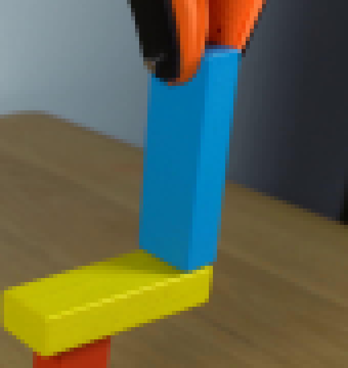
视觉工具实际返回图片 3
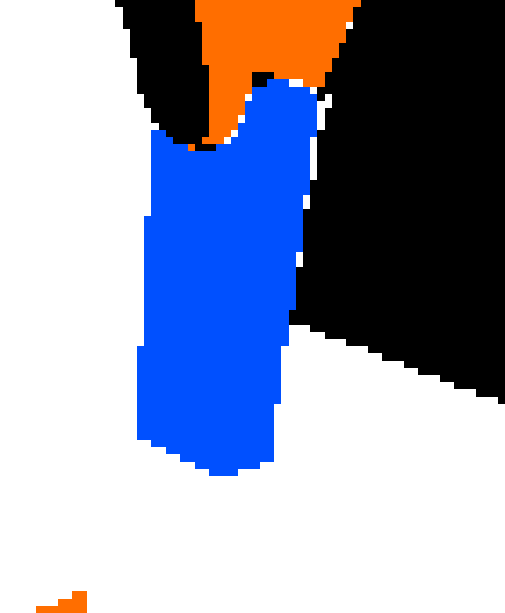
视觉工具实际返回图片 4
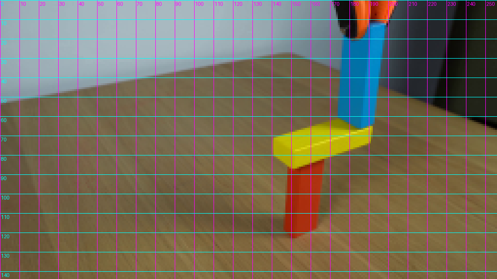
视觉工具实际返回图片 5
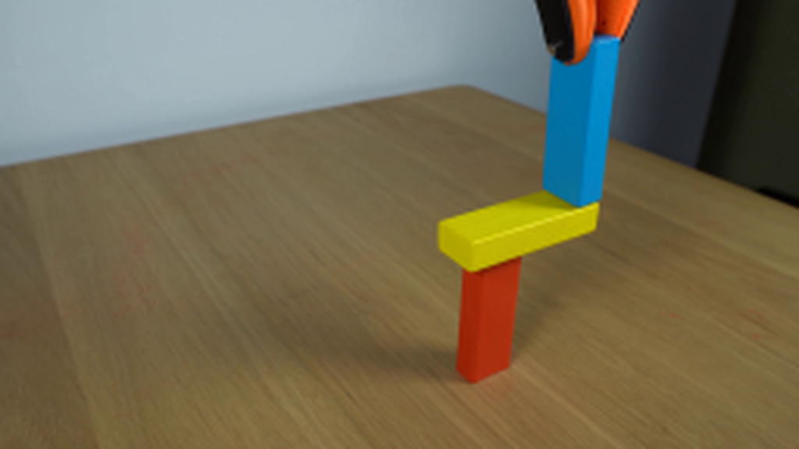
视觉工具实际返回图片 6
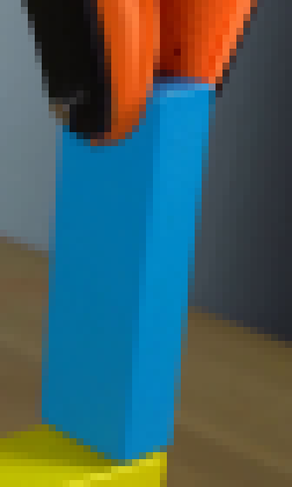
视觉工具实际返回图片 7
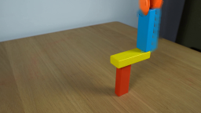
视觉工具实际返回图片 8
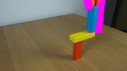
视觉工具实际返回图片 9
视觉工具实际返回图片 10
视觉工具实际返回图片 11
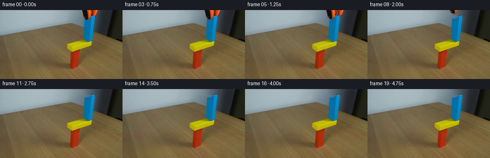
视觉工具实际返回图片 12

视觉工具实际返回图片 13
视觉工具实际返回图片 14
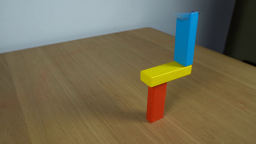
视觉工具实际返回图片 15
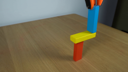
视觉工具实际返回图片 16
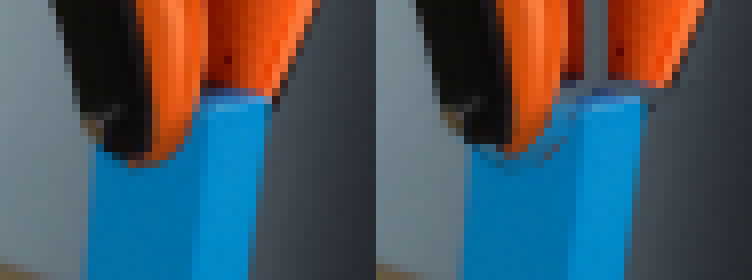
视觉工具实际返回图片 17
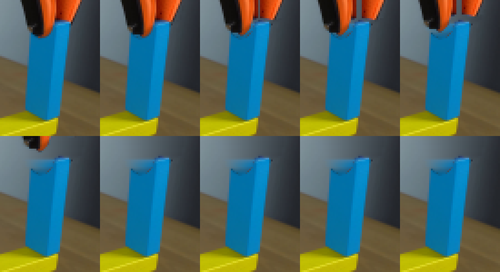
视觉工具实际返回图片 18
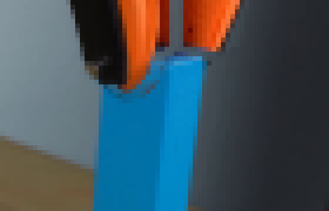
视觉工具实际返回图片 19
视觉工具实际返回图片 20

视觉工具实际返回图片 21
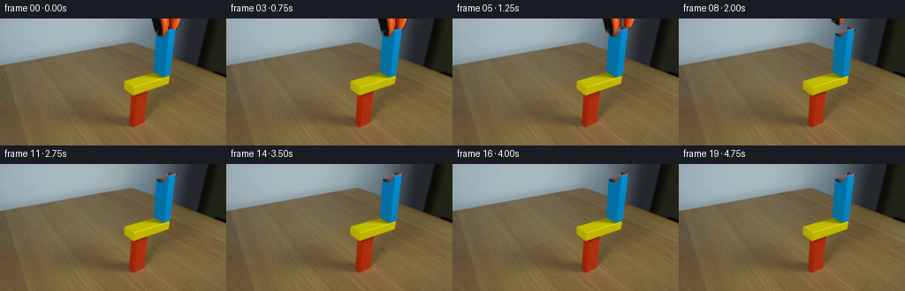
视觉工具实际返回图片 22
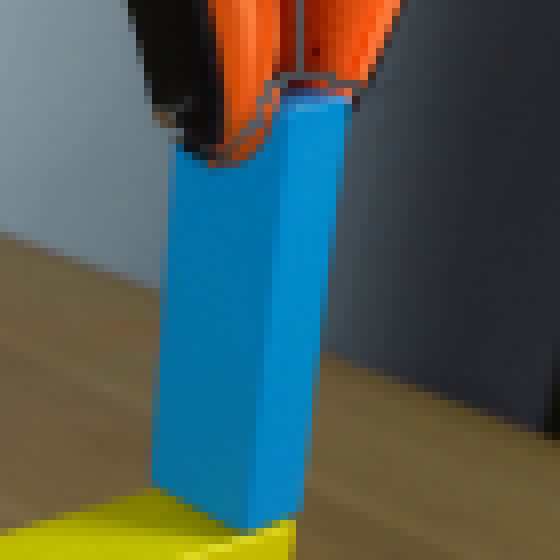
视觉工具实际返回图片 23
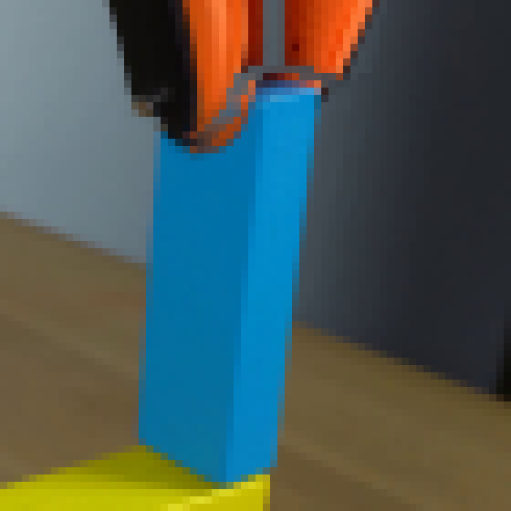
视觉工具实际返回图片 24
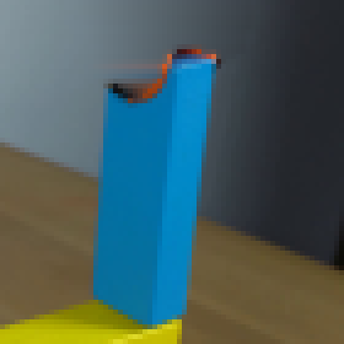
视觉工具实际返回图片 25

视觉工具实际返回图片 26
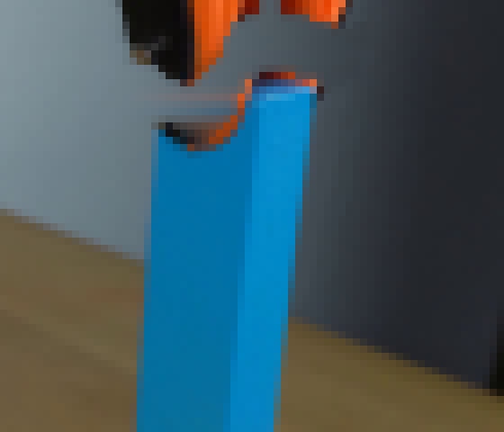
视觉工具实际返回图片 27
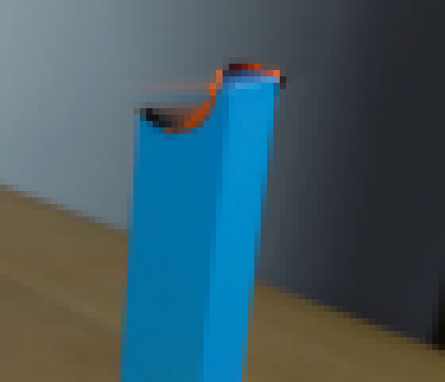
保存候选 4 份；完成命令 58 次；可验证图片返回 27 张。原始 API 响应与完整日志保留在本地。